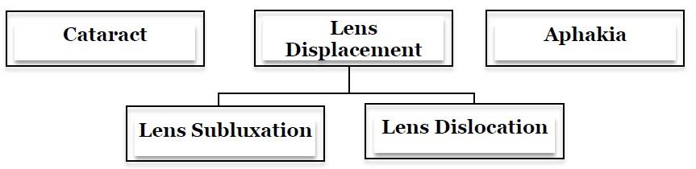
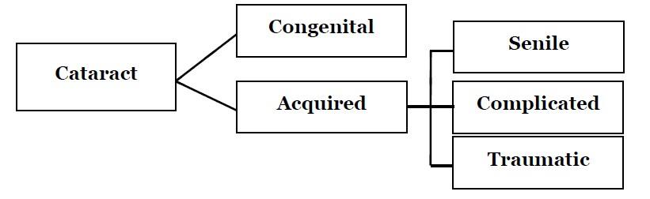

Cataract · Classification
Classification of Cataract
Flowchart A

- Cataract
- Lens displacement
- Aphakia
Flowchart B

- Cataract
- 1) Congenital & Developmental Cataract
- 2) Acquired Cataract
- 1) Senile Cataract
- 2) Complicated Cataract
- 3) Traumatic Cataract